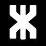
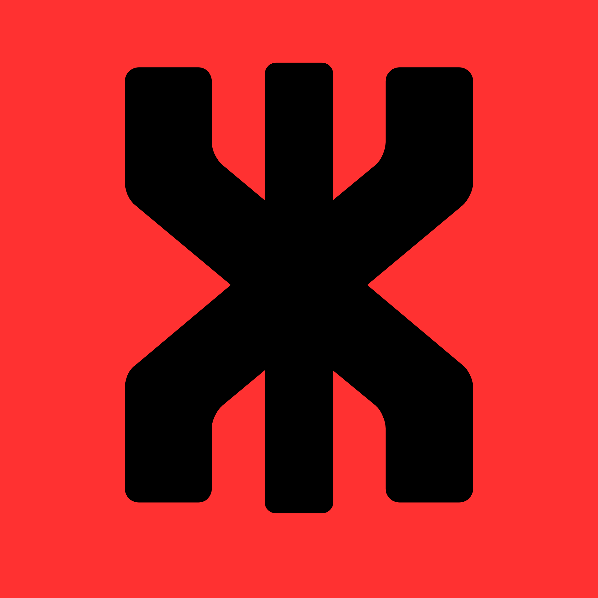

KRONYX
Identité générale de la marque. Utilisée sur le site et les supports principaux.
KRONYX LABS / GRAPHICS DIVISION
Des concepts de cartes graphiques et leurs identités de gamme.
01 / NVIDIA GEForce
Une identité sombre et technique, relevée par le vert. Cette carte conceptuelle privilégie une coque géométrique, deux ventilateurs et une tranche à trois zones.
Les noms et caractéristiques présentés sont illustratifs. KRONYX Labs n'est pas affiliée à NVIDIA.
02 / NVIDIA GEFORCE
Vert et blanc : une variante plus classique et épurée, pensée comme un clin d'œil à l'héritage de la gamme GTX.
Illustration de concept. Aucune carte n'est commercialisée par KRONYX.
 RENDER CONCEPTUEL
RENDER CONCEPTUEL

03 / AMD GRAPHICS
Une identité rouge et noire, contrastée et industrielle. Le rouge est réservé à la famille Radeon, tandis que le reste du site garde une base neutre.
Illustration de concept. KRONYX n'est pas affiliée à AMD.
VISUAL IDENTITY / GUIDE
Une même marque, plusieurs variantes selon le support et la famille de produits.

Identité générale de la marque. Utilisée sur le site et les supports principaux.
Identifie l'activité cartes graphiques et la page dédiée aux GPU.
Variante noire sur vert pour distinguer la famille RTX.
Variante blanche sur vert réservée à la famille GTX.
Variante noire sur rouge pour distinguer la famille Radeon.